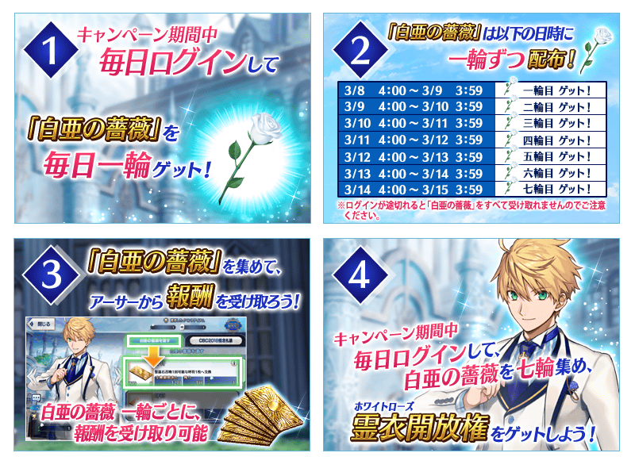
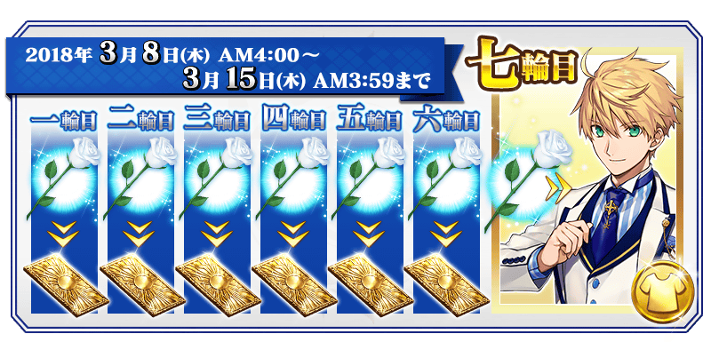
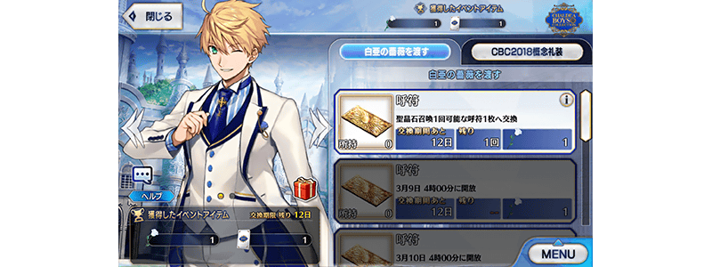
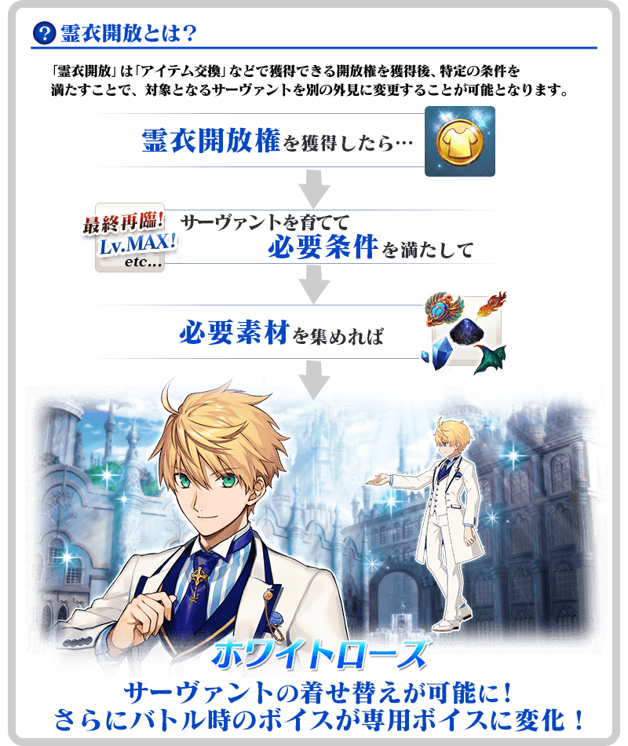
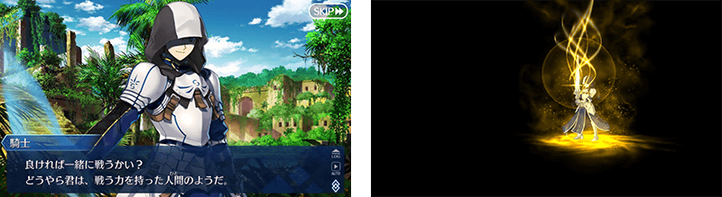

◆舉辦期間◆
2018年3月7日(三) 20:00～3月14日(三) 22:59
※請注意宣傳活動的舉辦期間與「白亞的薔薇」的領取期間相異。
在宣傳活動期間中登入的話，每天贈送一朵「白亞的薔薇」！
每天收集各一朵依序領取報酬的話，靠第七朵的交換得到亞瑟・潘德拉剛〔Prototype〕的靈衣開放權！
期間中，每天登入來得到豪華報酬吧！
※「白亞的薔薇」為在道具交換畫面對應持有數，開放從亞瑟・潘德拉剛〔Prototype〕領取報酬的道具。
|
◆「白亞的薔薇」的領取條件◆ ◆「白亞的薔薇」與靈衣開放權的交換條件◆ ◆「白亞的薔薇」的領取期間◆ ◆「白亞的薔薇」的交換期間◆ |


※在「白亞的薔薇」與報酬的交換時可聆聽亞瑟・潘德拉剛〔Prototype〕的特別語音，宣傳活動期間結束後會追加到Servant詳細的「語音清單」。
未持有亞瑟・潘德拉剛〔Prototype〕的情況，會在新入手的時間點追加到「語音清單」。
| 「白亞的薔薇」個數 | 登入時間 | 能交換道具 | |
|---|---|---|---|
| 第一朵 | 3月8日(四) AM3:00～ 3月9日(五) AM2:59 | 呼符 1張 | |
| 第二朵 | 3月9日(五) AM3:00～ 3月10日(六) AM2:59 | 呼符 1張 | |
| 第三朵 | 3月10日(六) AM3:00～ 3月11日(日) AM2:59 | 呼符 1張 | |
| 第四朵 | 3月11日(日) AM3:00～ 3月12日(一) AM2:59 | 呼符 1張 | |
| 第五朵 | 3月12日(一) AM3:00～ 3月13日(二) AM2:59 | 呼符 1張 | |
| 第六朵 | 3月13日(二) AM3:00～ 3月14日(三) AM2:59 | 呼符 1張 | |
| 第七朵 | 3月14日(三) AM3:00～ 3月15日(四) AM2:59 | ★5(SSR)亞瑟・潘德拉剛〔Prototype〕靈衣「White Rose」開放權 | |
※請注意未於各登入時間的期間內登入的話無法領取「白亞的薔薇」。
※「白亞的薔薇」及交換對象道具各只限領取1次。
※最多能領取7次，根據「白亞的薔薇」的持有數，可能無法到此上限。
「白亞的薔薇」的交換可自管理室(ターミナル)畫面右上的「道具交換」按鍵或達文西工房的「活動道具交換」交換。
將「白亞的薔薇」交給亞瑟・潘德拉剛〔Prototype〕領取報酬全部有7個，依序交付來領取下個報酬。
請注意最終未滿足七朵「白亞的薔薇」的話，無法領取所有的報酬。

新追加「★5(SSR)亞瑟・潘德拉剛〔Prototype〕」的靈衣開放權！
宣傳活動期間中，收集七朵可靠登入獎勵每天各入手一朵「白亞的薔薇」的話就能交換靈衣開放權！
想開放「★5(SSR)亞瑟・潘德拉剛〔Prototype〕」的靈衣「White Rose」的話，除了靈衣開放權外必須再加上以下的開放條件和素材。
※在「迦勒底男孩收藏2018」追加靈衣的Servant只有「★5(SSR)亞瑟・潘德拉剛〔Prototype〕」。
※「★5(SSR)亞瑟・潘德拉剛〔Prototype〕」的靈衣開放權只限「迦勒底男孩收藏2018」的舉辦期間才能取得。
※請注意靈衣開放權若未持有對象Servant的話，無法進行Servant的換裝。

※「靈衣開放」後自動切換戰鬥角色和圖示。若想回到「靈衣開放」前的狀態和變成其他再臨階段的情況，可自Servant詳細畫面變更
※靈衣開放」只變更Servant的外觀，職階和能力等並無變化。
※請注意寶具演出時的語音及一部份的語音並無變化。

「靈衣開放」可自強化畫面選擇。
介紹開放新靈衣「White Rose」的亞瑟・潘德拉剛〔Prototype〕寶具演出！
在「Fate/Grand Order」官方網站內的公告中，公開了「★5(SSR)亞瑟・潘德拉剛〔Prototype〕」(靈衣開放後)的寶具演出。敬請確認。
在達文西工房的「稀有稜鏡交換」追加下述的新道具。
◆追加時間◆
2018年3月7日(三) 20:00～
◆新追加道具(恆常)◆
| 追加道具 | 能交換 次數 |
所需的 稀有稜鏡數 |
|---|---|---|
| 亞瑟・潘德拉剛〔Prototype〕 體驗關卡 |
1次 | 1個 |
| 「CBC2017」限定 概念禮裝交換商店 | 1次 | 3個 |
※請注意曾通過1次亞瑟・潘德拉剛〔Prototype〕的體驗關卡的話無法於達文西工房的「稀有稜鏡交換」交換。
※「CBC2017」限定 概念禮裝交換商店開放權為交換後將「CBC2017特別邀請函」送至禮物箱。
※「CBC2017特別邀請函」可自管理室(ターミナル)畫面右上的「道具交換」按鍵或達文西工房的「活動道具交換」交換於2017年的「CBC2017」贈送的期間限定概念禮裝。
※請注意「迦勒底男孩收藏2017」舉辦時，有使用「CBC2017特別邀請函」交換禮物履歴的話無法於達文西工房的「稀有稜鏡交換」交換。
|
在達文西工房的「稀有稜鏡交換」追加亞瑟・潘德拉剛〔Prototype〕的體驗關卡。 ◆關卡通過報酬◆ |

期間限定Servant「亞瑟・潘德拉剛〔Prototype〕」登場的「迦勒底男孩收藏2018Pick Up召喚(每日交替)」的詳情請自下述橫幅確認。